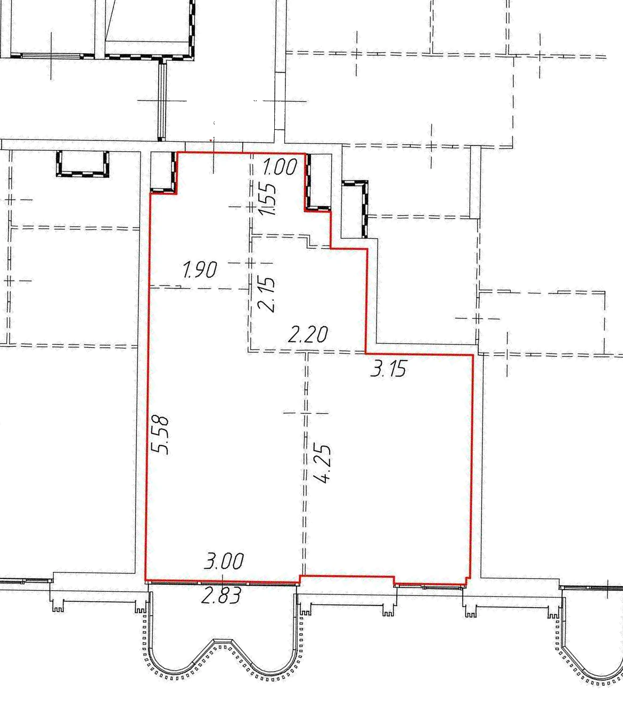
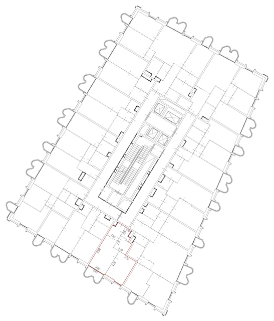
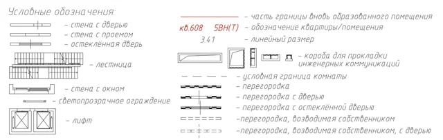
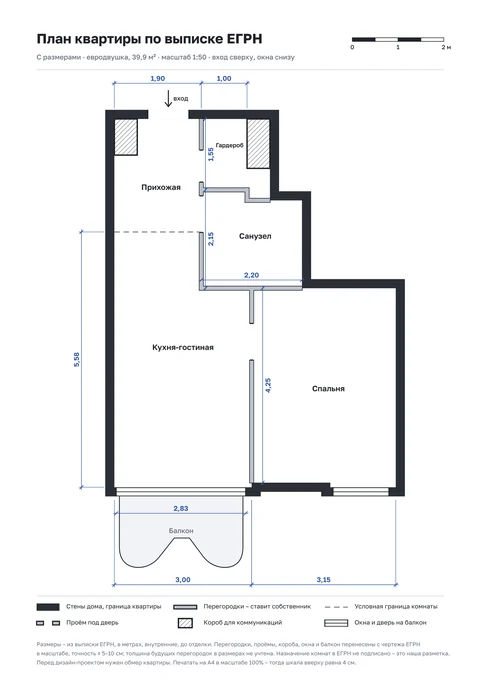
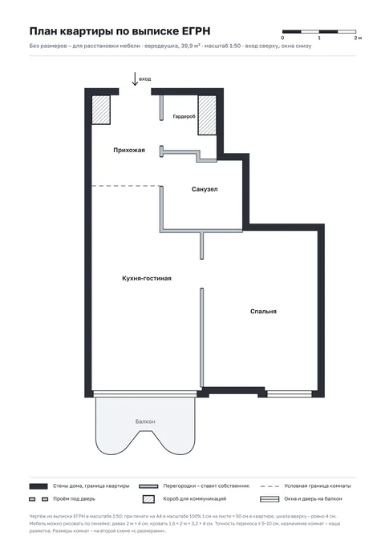
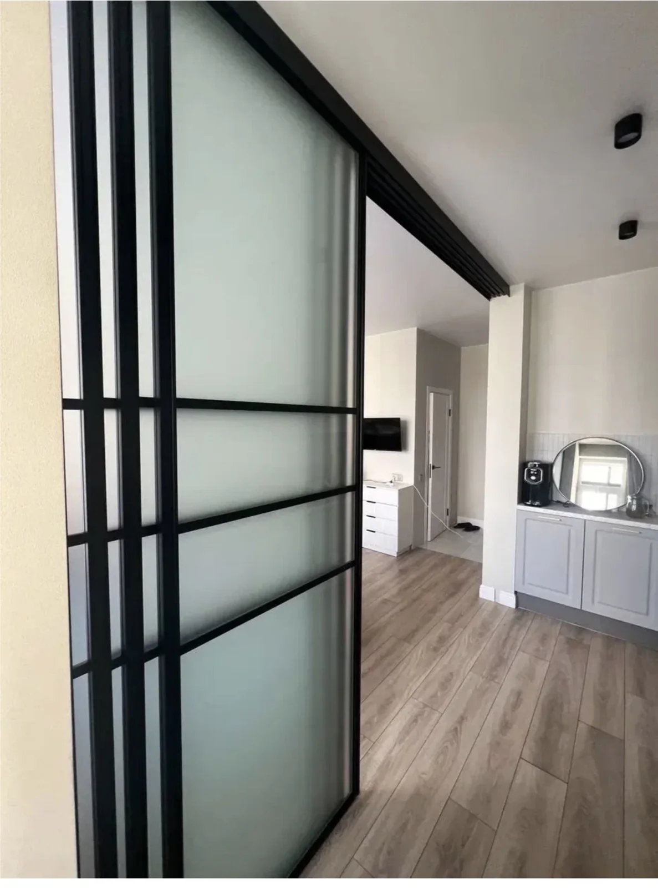
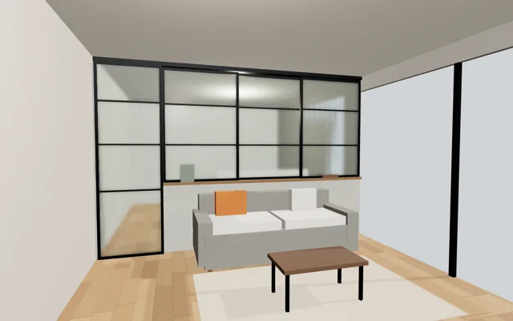
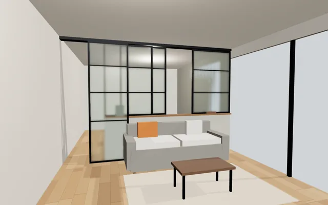
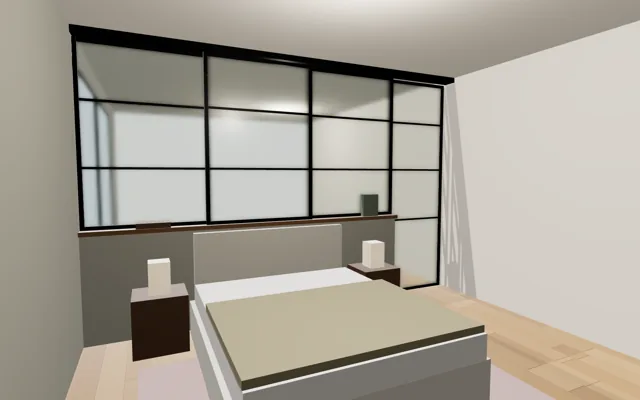

Дизайн квартиры
Дизайн-проект – это чертежи, по которым работает бригада: где стены, розетки, свет и выводы воды. Его делают до начала черновых работ.
- Площадь
- 39,9 м²по выписке ЕГРН, без балкона
- Комнаты
- Евродвушкакухня-гостиная 3,00 × 5,58 м, спальня 3,15 × 4,25 м
- Высота потолков
- заполним
- Жильцы
- 2 человеканужно рабочее место дома
Пример: такая же квартира с ремонтом
Этажом ниже


Как там сделано
- Пол «ёлочкой» по всей квартире, в санузле – плитка под дерево
- Кухня одной линией до потолка, техника встроена
- Линейный свет на потолке, кондиционер в гостиной
- Санузел: душ за стеклом, подвесной унитаз, стиральная машина
Палитра в примере
Тёплый бежевый, белый, светлый бетон, тёмный дуб, оранжевые акценты. Оттенки подобраны на глаз по фото – для покупки нужны коды красок.
Палитра: 10 оттенков на выбор
Сложные спокойные цвета для жилого интерьера. У каждого – код NCS: по нему краску колеруют в любом магазине с колеровочной машиной.
Исходный файл «10 оттенков для интерьера», PDF, 340 КБ
-
1
Тёплый серо-молочный
NCS S 2002-YСветлыйСеро-бежевый без желтизны, один из самых универсальных оттенков.
-
2
Песочно-серый
NCS S 2502-YСреднийСпокойный нейтральный цвет, отлично работает в гостиных и спальнях.
-
3
Пыльно-коричнево-бежевый
NCS S 3005-Y20RСреднийТёплый, спокойный, не «дешёвый» беж.
-
4
Серо-оливковый
NCS S 3010-G70YСреднийСложный природный оттенок, отлично смотрится в современных интерьерах.
-
5
Пыльно-серо-зелёный
NCS S 4005-G20YГлубокийХолодный, но спокойный, хорошо сочетается с деревом.
-
6
Пыльно-голубой
NCS S 3010-R90BСреднийНе «детский» голубой, а взрослый и спокойный.
-
7
Серо-зелёно-коричневый
NCS S 4005-G80YГлубокийСложный цвет, идеален как база.
-
8
Серо-коричневый
NCS S 4005-Y20RГлубокийСложный цвет, который сразу делает интерьер глубже.
-
9
Пыльно-розовый
NCS S 2010-R10BСветлыйРаботает как нейтральный, а не как «розовый».
-
10
Молочный с розовым подтоном
NCS S 0507-Y80RСветлыйБолее тёплая и дорогая альтернатива чисто белому.
Как читать код NCS
Пример: S 3005-Y20R
- 30 – чернота: чем больше, тем темнее цвет
- 05 – насыщенность: чем меньше, тем спокойнее и «сложнее» цвет
- Y20R – оттенок: жёлтый с 20% красного. G – зелёный, B – синий, R – красный, Y – жёлтый
Светлые – чернота до 20, средние – 25–30, глубокие – 40.
Как подобрать к квартире
- База стен – светлые 10, 1, 9 или средний 2: квартира небольшая, светлые стены дают ощущение простора
- Акцент – глубокие 5, 7, 8: одна стена за кроватью или зона телевизора, как тёмная стена в спальне в примере этажом ниже
- С полом под тёмный дуб спокойно смотрятся серо-бежевые 1–3 и зелёные 4, 5
- Не больше 3 цветов на квартиру: база, второй и акцент
Как проверить цвет до покупки краски
Цвета на экране – примерные: каждый монитор и телефон показывает их по-своему. Решение – только по пробнику на стене.
Источник: подборка «10 универсальных оттенков для жилого интерьера» студии ремонта «Онтарио». Образцы на экране сняты с её файла.
Зоны и что заложить заранее
| Зона | Что здесь происходит | Что заложить заранее |
|---|---|---|
| Прихожая | Одежда, обувь, вход | Шкаф до потолка, зеркальная стена (К-06), розетка для пылесоса и зарядок |
| Кухня | Готовка, еда | Мойка, плита и холодильник рядом друг с другом; 4–6 розеток над столешницей; выводы под посудомойку; вытяжка |
| Гостиная | Отдых, гости, кино | ТВ-зона: 4 розетки, интернет и канал для проводов к телевизору (К-04); свет несколькими группами |
| Спальня | Сон, хранение | Розетки и выключатели у кровати с двух сторон; ниша для штор в потолке (К-08); шкафы до потолка (К-05) |
| Рабочее место | Работа, созвоны | Отдельный чек-лист ниже |
| Санузел | Душ или ванна, стирка | Только в разрешённых зонах – схема; выводы под стиральную машину; вытяжной вентилятор; полотенцесушитель; розетка для фена с защитой от воды |
| Балкон или лоджия | Хранение, отдых | Свет и розетка, если утеплять |
Чертёж из выписки ЕГРН
ОригиналГрафическая часть выписки – «План расположения помещения на этаже», масштаб 1:200. Красная линия – граница нашей квартиры. Номер квартиры и этаж на картинках скрыты.


Как читать чертёж
- Красная линия – граница квартиры
- Цифры – размеры в метрах: кухня-гостиная 3,00 × 5,58, спальня 3,15 × 4,25, санузел 2,20 × 2,15, гардеробная 1,00 × 1,55, ширина прихожей 1,90
- Двойной пунктир – перегородки, «возводимые собственником»; поперечная черта на нём – дверь
- Одинарный пунктир – условная граница комнаты: между прихожей и кухней-гостиной стены нет
- Заштрихованные прямоугольники – короба для коммуникаций, в них стояки
- Назначение комнат на чертеже не подписано – наш разбор по зонам ниже, в схеме мокрых зон




Схемы для печати и скачивания
Перерисованы с чертежа ЕГРН в масштабе 1:50: при печати на A4 в масштабе 100% 1 см на листе = 50 см в квартире, шкала на листе – ровно 4 см. Размеры – из выписки, остальное перенесено по чертежу с точностью ± 5–10 см. Назначение комнат – наша разметка.




Мокрые зоны: где можно санузел
По выписке ЕГРНСанузел и кухню нельзя ставить над жилыми комнатами нижней квартиры – такую перепланировку не согласуют и могут обязать вернуть всё как было. План – из выписки ЕГРН. Квартира снизу такой же планировки, поэтому зоны считаем по своему плану.
* Прихожая отделена от кухни-гостиной только условной границей. Если у соседей снизу кухня заходит в прихожую, над этой частью санузел ставить нельзя – проверить по плану квартиры снизу.
План и размеры – по выписке ЕГРН, в масштабе: вход сверху, окна снизу. Назначение комнат в выписке не подписано – взяли по планировке похожей квартиры. Зоны «можно/нельзя» верны, если квартира снизу такая же: это проверим по экспликации и плану квартиры снизу.
Правила
- Санузел – туалет, ванную, душ – нельзя размещать над жилыми комнатами и над кухней нижней квартиры. Кухня-гостиная считается одним помещением: под запретом вся её площадь.СП 54.13330.2022, п. 7.20
- Над вспомогательными помещениями – прихожей, коридором, гардеробной, санузлом – можно.СП 54.13330.2022, п. 7.20
- Кухню нельзя переносить так, чтобы она оказалась над жилой комнатой нижней квартиры.Положение, утверждённое постановлением Правительства РФ № 47, п. 24
- Стиральную машину и другое оборудование, подключённое к воде или шумное, нельзя ставить над жилыми комнатами.СП 54.13330.2022, п. 7.20, по разъяснению mos.ru
- Вентиляционные и технические короба не сносить.Постановление Правительства Москвы № 508-ПП
- Расширение санузла – перепланировка: нужен проект и согласование с Мосжилинспекцией. С кем и где согласовывать →Жилищный кодекс РФ, ст. 26
Санузел без порога
По норме пол в санузле должен быть на 15–20 мм ниже пола соседних помещений или отделяться порогом.
- Без порожка и по норме: пол санузла на 15–20 мм ниже прихожей, на входе – плавный скос или переходный профиль. Перепад закладывают в стяжке – решить до неё.
- Вровень с прихожей: так часто делают, но это отступление от нормы, и при согласовании перепланировки к нему могут придраться. Тогда обязательно уклон пола к трапу и гидроизоляция с заходом в прихожую.
СП 29.13330.2011 «Полы», п. 4.8
Гидроизоляция: вся квартира или нет
- Обязательно – весь пол санузла, на стены не ниже 20 см, в зоне душа – на всю высоту брызг
- Разумно – полоса в прихожей у двери санузла, место стиральной машины, пол под мойкой и посудомойкой
- Вся квартира – нормы не требуют. Довод «за»: у нас трубы отопления идут в полу по всей квартире, а гидроизоляцию по плите перед стяжкой делают за один заход. Решить с проектировщиком
- Важнее всего – защита от протечек: краны с электроприводом и датчики на полу
СП 29.13330.2011 «Полы», пп. 7.1–7.2
Что это значит для нас
- Душ без поддона (К-07) – в границах нынешнего санузла: можно. Без порожка – с перепадом 15–20 мм
- Санузел можно расширить только в сторону прихожей и гардеробной
- Стиральная машина – в санузле, как в примере этажом ниже, или в прихожей
- Что поставить в санузел – чек-лист ниже
- Кухня остаётся у той же стены, в спальню её не переносим
Чтобы схема стала точной
- Шаг 1 – выписка ЕГРН с планом нашей квартиры – есть
- Шаг 2 – поэтажный план и экспликация БТИ: какие комнаты жилые
- Шаг 3 – план квартиры снизу
- Шаг 4 – точная схема здесь
На сайт выкладываем только схему зон, сами документы – нет: в них фамилия собственника, кадастровый номер и адрес. Правила – ориентир, окончательно решают проектировщик и Мосжилинспекция.
Санузел: что запланировать
Чек-лист из 62 пунктов в 6 группах. Отметьте, что нужно в нашем санузле: внизу соберётся список, его можно скопировать и отправить куратору. Пометки под пунктами – связь с нашими заметками и правилами.
Исходный файл «Всё для санузла», PDF, 250 КБ
Размеры, которые закладываем
Коллектор, краны и счётчики в коробе инсталляции – только с лючком, через который их можно обслужить и поменять: иначе бывают вопросы на приёмке. Подробно – К-15, К-16, К-17, К-18, К-19.
Сантехнические приборы
Техническое оснащение и инженерия
Мебель и хранение
Освещение и электротехника
Декор и аксессуары
Строительные и отделочные элементы
Источник: чек-лист «Планируем санузел» студии ремонта «Онтарио». Отметки хранятся только в этом браузере.
Стеклянная перегородка в спальню
2 вариантаИдея из заметки К-02: вместо глухой стены между спальней и кухней-гостиной – раздвижная стеклянная перегородка. Так обе комнаты вместе дают больше простора и света.
Вариант 1: от пола до потолка


Что на фото
- Полотна висят на направляющей под потолком, внизу рельса нет – пол единый
- Чёрный алюминиевый профиль с горизонтальной раскладкой
- Матовое стекло: свет проходит, а спальню не видно
- Несколько полотен на параллельных направляющих заходят друг за друга
Как ляжет у нас
- По выписке ЕГРН стена между спальней и кухней-гостиной – перегородка, «возводимая собственником», длиной около 4,25 м. По плану в ней же дверь в спальню
- Значит, 3–4 полотна: часть неподвижные, часть сдвигаются
- Если ставить по той же линии – уточнить у проектировщика, нужна ли перепланировка (К-13)
Что учесть
- Крепление. Направляющую крепят к плите перекрытия. С натяжным потолком нужен закладной брус или ниша – решить до потолков, вместе с нишей для штор (К-08)
- Стекло – закалённое или триплекс, чтобы при ударе не было острых осколков
- Звук. Стекло и зазоры глушат хуже стены: для спальни – уплотнители в профиле, триплекс, шторы. Изголовье кровати – к глухой стене
- Свет и розетки – только на соседних стенах, на стекло их не поставить
- Пол. Без нижнего рельса пол спальни и гостиной – одним покрытием и в одном уровне (К-01)
Вариант 2: стекло на полустенке ≈ 1 м
Низ – глухая стенка примерно метровой высоты с подоконником, сверху до потолка – стеклянные полотна, часть из них сдвигается. Проход – отдельной дверью-купе в полный рост. Высоты ориентировочные.






Это 3D-визуализация по нашим размерам – стена 4,25 м, полустенка 1 м, потолок принят 2,8 м, – а не фото. Цвета стен – оттенки 1 и 2 из палитры, пол и мебель условные.
Чем удобнее
- К полустенке можно поставить изголовье кровати со стороны спальни и диван или тумбу – со стороны гостиной
- В полустенке – розетки и выключатели, на стекле их не сделать
- Стекла меньше – дешевле и безопаснее, у кровати приватнее
- Сдвижные створки сверху можно открыть – как внутреннее окно
Что учесть
- Проход нужен отдельно – дверь-купе в полный рост; по плану ЕГРН дверь в спальню как раз в этой стене
- Нижняя направляющая – в подоконнике полустенки, верхняя – под потолком; полустенку крепят к полу и стене, свободный край усиливают
- Полустенка 80–100 см: ниже – видно кровать, выше – меньше света
- Стекло – триплекс или закалённое
Полустенка + раздвижные створки
Как на схеме: полотна над полустенкой ездят по двум направляющим, проход – дверь-купе рядом.
Полустенка + глухое стекло
Стекло над полустенкой не двигается – проще и тише, раздвижная только дверь. Во Франции это называют «верьер на полустенке».
Мебель вместо полустенки
Низ – встроенный комод или тумба на всю длину: со стороны спальни изголовье, со стороны гостиной – место под ТВ. Сверху – стекло.
Реальные примеры и изделия
Во Франции такую перегородку делают серийно и называют verrière sur muret – «стекло на полустенке», раздвижную – verrière coulissante sur muret. В России её делают на заказ производители лофт-перегородок: полустенку на их сайтах не показывают, поэтому её надо прямо назвать при замере. Фото – на страницах по ссылкам, описания ниже – по их текстам.
Реальные объекты
- Перегородка между гостиной и спальнейdivinox.fr
Ближе всего к нашему: стальной профиль в чёрном цвете, внизу глухая часть, проход – раздвижная дверь.
- Раздвижная перегородка на 2 створкиverriere-france.fr
В отзывах покупательница пишет: «перегородка на заказ, отделяет гостиную от спальни, на полустенке». Стекло – закалённое, от 6 мм.
- Галерея объектов Verrière Factoryverrierefactory.fr
Стекло на кирпичной полустенке (проекты Boyenval, Grosdemange), на полустенке из гипсокартона, как будет у нас (Petit), спальня за стеклом с раздвижной дверью (Gauvin). Стекло там неподвижное – смотреть пропорции.
- Стальные перегородки на полустенкеed-ei.fr
Объекты V47 и V50: в V47 стекло на полустенке отделяет спальню от гостиной, дверь распашная. Там же: если полустенка из ГКЛ, в её верх закладывают брус и усиливают каркас.
Готовые изделия
- Раздвижная перегородка на полустенкуcoulidoor.fr
Серийное изделие ровно под наш случай: неподвижная створка и сдвижная на роликах, рельс крепят к потолку, доводчик в комплекте. Схема монтажа – в инструкции (PDF).
- Комплект «внутреннее окно» 108 × 183 смbricozor.com
6 стёкол, 2 створки сдвигаются, стекло закалённое 4 мм, 419 €. Над нашей полустенкой ≈ 1,8 м, а комплект – 1,08 м: до потолка не хватит, сверху нужна глухая фрамуга.
Как устроено и кто сделает в Москве
- Гид Saint-Gobain по стеклянным перегородкамlamaisonsaintgobain.fr
Полустенка под стекло – 80–90 см; раздвижную перегородку можно поставить на полустенку – так дешевле; стекло лучше многослойное (триплекс).
- Т—Ж: какие бывают перегородкиt-j.ru
Есть фото раздвижной стеклянной перегородки, которая уезжает за комбинированную – каркасный низ и стекло сверху. Ориентир – от 19 900 ₽ за м².
- Loftcase: раздвижные лофт-перегородкиloftcase.ru
Шоурум в Москве, раздвижные – от 29 900 ₽ за м², есть комбинированные. Полустенку уточнить у менеджера.
- Laloft: перегородка с раздвижными элементамиlaloft.ru
Ориентир – 41 000 ₽ за м², закалённое стекло 5–6 мм. Вариант на полустенку на сайте не описан.
- Гласстрой: лофт-перегородкиglasstroy.ru
Москва, от 9 900 ₽ за м², высота до 4 м. Про полустенку на сайте нет – спросить.
Искать ещё фото: «verrière coulissante sur muret» в Яндекс Картинках, то же на Pinterest, «Раздвижная перегородка в спальне» на Pinterest, статья о раздвижных перегородках в квартире. По-русски такие фото ищутся хуже: «перегородка на парапете», «лофт-перегородка с глухим низом». Цены – с сайтов на 28.10.2026, без монтажа и без полустенки.
Рабочее место
Свет и розетки
Свет – группами
- Общий – потолочные светильники
- Рабочий – над столешницей, столом, зеркалом
- Акцентный – подсветка ниш, полок, картин
- Ночной – подсветка пола в коридоре или у кровати
Проходные выключатели: в спальне – у входа и у кровати, в коридоре – с двух концов. Сценарии по зонам – в заметке К-09.
Розетки – ориентир
Точное число и высоты – по плану мебели. Лишняя розетка на черновом этапе стоит недорого, а после отделки – это штроба и ремонт стены.
Состав дизайн-проекта
Для старта черновых работ хватит первых шести планов. Визуализации – по желанию: они помогают выбрать, но бригада работает по чертежам.
Стиль и материалы
Референсы
Присылайте фото интерьеров, которые нравятся, и ссылки на материалы – соберу здесь подборку. Цвета стен – из палитры выше.
| Поверхность | Выбор | Комментарий |
|---|---|---|
| Пол в комнатах | заполним | |
| Пол в прихожей и санузле | заполним | |
| Стены | заполним | цвет – из палитры |
| Потолки | заполним | |
| Плитка в санузле | заполним | |
| Фартук на кухне | заполним | |
| Межкомнатные двери | заполним | |
| Кухня: фасады и столешница | заполним |